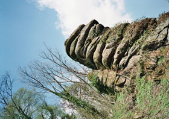

Die Welt für sich und die Welt für mich.
The World itself and the World for me.

Bernhard Sallmann – Germany / Austria 2013 – 45 min.
Sc+DOP+S+P: Bernhard Sallmann – E: Christoph Krüger
With Judica Albrecht (speaker), Hans Peneder (piano)
Digital – Germany
In the 1890s, the Swedish poet August Strindberg (1849-1912) finds himself in an aesthetic crisis and writes no literature. Instead he turns to other forms of expression: photography, painting, chemistry, alchemy. He tests these new forms in Austrian exile on the Danube. He opens the gate to modernity. DIE WELT FÜR SICH UND DIE WELT FÜR MICH. (The World for Itself and the World for Me.) celebrated its world premiere at the 56th International Leipzig Festival for Documentary and Animation Film. – Crossing Europe
Dienstag 18:30 Uhr Werkstattkino – Zu Gast: Bernhard Sallmann
Bernhard Sallmann, born in 1967 in Austria. Film studies at the HFF „Konrad Wolf“, Potsdam-Babelsberg (Berlin). Since 2004 he has been working as independent film director. Writes texts, and teaches. Lives in Berlin.
Films (selection): Ad marginem 1995 – Menschen am Kanal 1999 – Neugeteilter Himmel 2000 – Berlin-Neukölln 2001 – L. schweigt 2003 – Die Lausitz 20x90 2004 – Träume der Lausitz 2009 – Das schlechte Feld 2011 – Die Welt für sich und die Welt für mich. 2013 – Sevan 2014